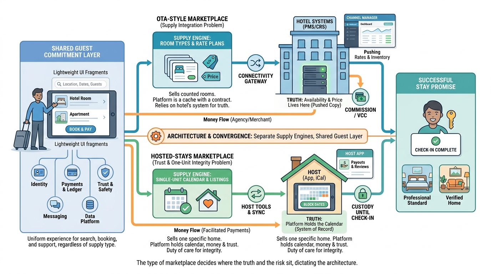

Part I — MARKETPLACE: The Business of a Night's Stay
Two Marketplaces for a Night's Stay: OTAs, Hosted Stays and How They Grew

Image generated by Google Gemini (gemini-3-pro-image-preview)
Part I — MARKETPLACE: The Business of a Night's Stay

Image generated by Google Gemini (gemini-3-pro-image-preview)